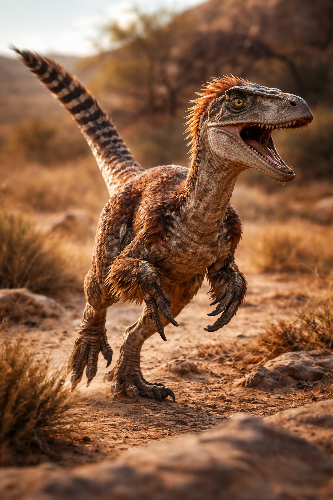
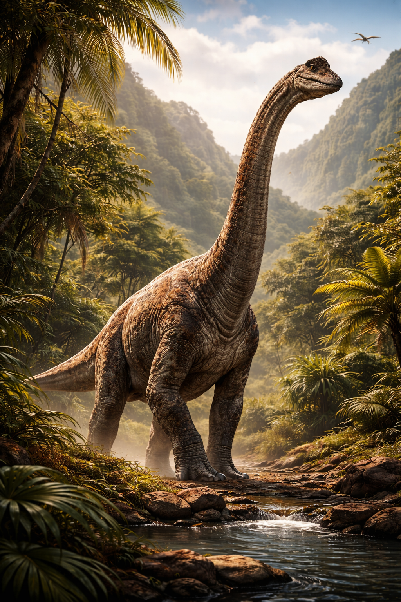

Velociraptor
Auftritt im Film
Hochintelligenter, im Rudel Jagender Räuber mit einer Höhe von ca.2 Metern und der Läne von etwa 5 Metern
Wissenschaftliche Fakten
Der Velociraptor war ein, zur Gruppe der Saurischia(Echsenbeckendinosaurier) gehörender, im Rudel jagender Theropode der zur Gattung der Dromeosaurier gehörte. Er war etwa so intelligent wie ein heutiger Truthan.
| Name | Bedeutung | Größe | Gewicht | Auftreten | Lebensraum |
|---|---|---|---|---|---|
| Velociraptor | schneller Räuber | ca. 2m L, 60cm H | 15 kg | vor 85 - 76 Mio Jahre (Oberkreide) Mongolei |
Trockene, wüstenähnliche Landschaften |
Brachiosaurus
Auftritt im Film
Imposanter, friedlicher Pflanzenfresser mit einer Größe von ca. 12 Metern und der Läne von etwa 15 Metern
Wissenschaftliche Fakten
Der Brachiosaurus ist ein, zur Gruppe der Saurischia(Echsenbeckendinosaurier) gehörender, friedlicher Pflanzenfresser der zur Gattung der Sauropoda (Sauropoden) gehörte. Er zählt zu den Größten landtieren der Erdgeschichte
| Name | Bedeutung | Größe | Gewicht | Auftreten | Lebensraum |
|---|---|---|---|---|---|
| Brachiosaurus | Armfresser | ca. 23 L, 13m H | 23 - 44t | vor 157 - 145 Mio Jahre (Oberjura) Nordamerika |
subtropische Gebiete |
Parasaurolophus
Auftritt im Film
am anfang nur kurz zu sehen
Wissenschaftliche Fakten
Der Parasaurolophus ist ein, zur Gruppe der Ornithischia(Vogelbeckendinosaurier) gehörender, friedlicher Pflanzenfresser der zur Gattung der Hadrosaurien gehörte. Seine Besonderheit war die langen Kamm auf dem Kopf (ca. 1,5 Meter), welcher Wahrscheinlich zur Kommunikation, Temperaturregelung oder zur Balz diente
| Name | Bedeutung | Größe | Gewicht | Auftreten | Lebensraum |
|---|---|---|---|---|---|
| Parasaurolophus | nahe der Kammeidechse | ca. 9m L, 4m H | ca. 2t | vor 76 - 73 Mio Jahre (Oberkreide) Nordamerika/Kanada |
tropische/subtropische Gebiete mit Flussauen und Seen. |
Dilophosaurus
Auftritt im Film
Ca. 2 Meter großer Fleischfresser mit zwei Kämmen auf dem Kopf und einer Halskrause, der seine Feinde mit seinem Giftigen Speichel bespuckt
Wissenschaftliche Fakten
Der Dilophosaurus ist ein, zur Gruppe der Saurischia(Echsenbeckendinosaurier) gehörender, zweibeiniger Theropode der im Rudel Jagte. Er besaß weder eine Halskrause noch spuckte er Gifigen Speichel.
| Name | Bedeutung | Größe | Gewicht | Auftreten | Lebensraum |
|---|---|---|---|---|---|
| Dilophosaurus | Zweikammechse | ca. 7m L, 3m H | ca. 500 kg | etwa 200 Mio Jahre (Unterjura) Nordamerika |
subtropische Gebiete mit Flussauen und Seen, Küstengebiete. |
Triceratops
Auftritt im Film
Rund 9 Meter langer Pflanzenfressender Dinosaurier mit drei Hörnern auf dem Kopf, zwei an der stirn und eines auf der Nase. Wird vom Tierarzt untersucht
Wissenschaftliche Fakten
Der Triceratops ist ein, zur Gruppe der Ornithischia(Vogelbeckendinosaurier) gehörender, friedlicher Pflanzenfresser der zur Gattung der Ceratopsien gehörte. Er besaß drei Hörner auf dem Kopf und einen Honschild welches seinen Nacken schützte
| Name | Bedeutung | Größe | Gewicht | Auftreten | Lebensraum |
|---|---|---|---|---|---|
| Triceratops | Dreihorn-Gesicht | ca. 9m L, 3m H | etwa 6 - 12t | vor 68 - 66 Mio Jahren (Oberkreide) Nordamerika/Kanada |
subtropische Gebiete mit Flussauen und Seen. |
Tyrannosaurus Rex
Auftritt im Film
Großer, furchteinflößender Fleschfresser mit langen Scharfen Reißzähnen
Wissenschaftliche Fakten
Der Tyrannosaurus Rex ist ein, zur Gruppe der Saurischia(Echsenbeckendinosaurier) gehörender, furchteinflößender Fleischfresser der zur Gattung der Tyrannosaurien gehörte. Er besaß Kräftige Beine und und zwei kurze stummel Arme mit jeweils dei Fingern. Er ist mit den heutigen Hühnern eng verwandt
| Name | Bedeutung | Größe | Gewicht | Auftreten | Lebensraum |
|---|---|---|---|---|---|
| Tyrannosaurus Rex | König der Tyrannenechsen | ca. 13m L, 4m H | ca. 4-8t | vor 72 - 66 Mio Jahren (Oberkreide) Nordamerika |
Wälder, Küstenlandschaften. |
Gallimimus
Auftritt im Film
Ein flinker, zweibeiniger Dinosaurier mit langen Beinen und einem langen, schmalen Kopf
Wissenschaftliche Fakten
Der Gallimimus ist ein, zur Gruppe der Saurischia(Echsenbeckendinosaurier) gehörender, flinker Pflanzenfresser der zur Gattung der Ornithomimiden gehörte. Er besaß lange Beine und einen langen, schmalen Kopf.
| Name | Bedeutung | Größe | Gewicht | Auftreten | Lebensraum |
|---|---|---|---|---|---|
| Gallimimus | Hühner-Nacharmer | ca. 4-6m L, 2m H | ca. 200 kg | vor etwa 76 - 69 Mio Jahren (Oberkreide) Mongolei |
Wälder und offene Ebenen |